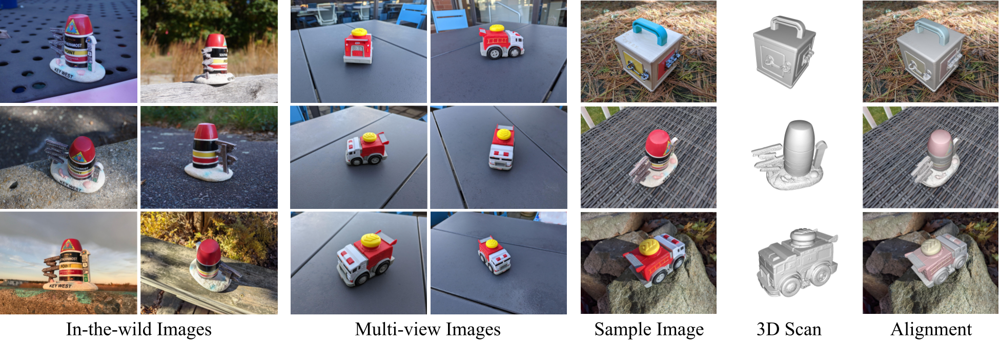
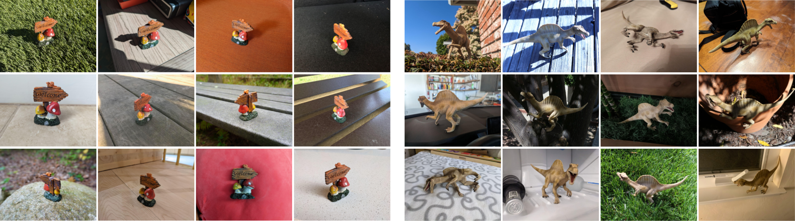

NAVI: Category-Agnostic Image Collections with High-Quality 3D Shape and Pose Annotations
Varun Jampani*
Kevis-Kokitsi Maninis*
Andreas Engelhardt
Karen Truong
Arjun Karpur
Kyle Sargent
Stefan Popov
Andre Araujo
Ricardo Martin-Brualla
Kaushal Patel
Daniel Vlasic
Vittorio Ferrari
Ameesh Makadia
Ce Liu
Yuanzhen Li
Howard Zhou
(*equal contribution)
Google

NAVI dataset consists of both in-the-wild and multi-view image collecitons with high-quality aligned 3D shape ground-truths
[Paper]
[Dataset]
[BibTeX]
Dataset Highlights
NAVI dataset consists of casually captured image collections with high-quality 3D shape and pose annotations. The dataset consists of multi-view and in-the-wild image collections of 36 objects with around 10K images in total. Here are some key aspects of the dataset:
- In-the-wild. In addition to typical multi-view object images, NAVI provides in-the-wild images collections where objects are captured under varying backgrounds, illuminations and cameras.
- Category-agnostic. Objects in the NAVI dataset are category-agnostic with image collections of toys and decoration items that do not have any category-specific shapes.
- Near-perfect 3D geometry. We use high-quality 3D scanners to get 3D shape ground-truth.
- Near-perfect camera poses. We obtain high-quality 3D camera pose annotations with manual 2D-3D alignment along with rigorous verification.
- Derivative annotations such as dense correspondences, depth etc. Given the near-perfect 3D shape and camera parameters, one could easily derive other high-quality annotations such dense pixel level correspondences, monocular depth, foreground segmentation etc.
Sample NAVI dataset images and the corresponding 3D shape alignments
Wild Image Collections
Wild image collections such as image search results or product catelogue photos are readily available in the internet and does not require any active capture efforts. To advance research on 3D shape and pose estimation from such in-the-wild online image collections, we provide image collections where the objects are captured under unique backgrounds, illuminations and camera settings.

Sample in-the-wild image collections in the NAVI dataset with varying backgrounds, illuminations and cameras
Multi-View Image Collections
Sample multi-view image collections in the NAVI dataset which are captured with hand-held cameras in natural settings
Dense Pixel Correspondences
Given the high-quality shape annotations, we can compute dense per-pixel correspondences across different object images.
Monocular Depth and Foreground Segmentations
BibTex
If you find this dataset useful, please consider citing our work:
@article{jampani2023navi,
title={NAVI: Category-Agnostic Image Collections with High-Quality 3D Shape and Pose Annotations},
author={Jampani, Varun and Maninis, Kevis-Kokitsi and Engelhardt, Andreas and Truong, Karen and Karpur, Arjun and Sargent, Kyle and Popov, Stefan and Araujo, Andre and Martin-Brualla, Ricardo and Patel, Kaushal and Vlasic, Daniel and Ferrari, Vittorio and Makadia, Ameesh and Liu, Ce and Li, Yuanzhen and Zhou, Howard},
booktitle={arXiv preprint},
url={https://navidataset.github.io/},
year={2023}
}
-->